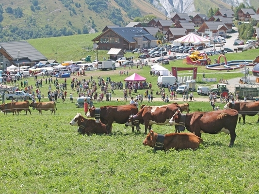

Les marchés et foire
 Entre ciel et sommets
Entre ciel et sommets
Le marché de morzine
- 141 Bis Place de la Poste
74110 Morzine
- Tous les mercedis de l'année de 8h à 12h30

Le marché du Grand-Bornand
- Le Grand-Bornand Village
74450 Le Grand-Bornand
- Toute l'année, tous les mercredis de 8h à 12h30.

Les Foires
La Foire aus bestiaux de saint jean d'arves
- La Chal
73530 Saint-Jean-d'Arves
- Dimanche 23 août 2020.Toute la journée
- 
La Foire du tout-terrain
- 73450 Valloire
- Du mercredi 26 au dimanche 30 août 2020.